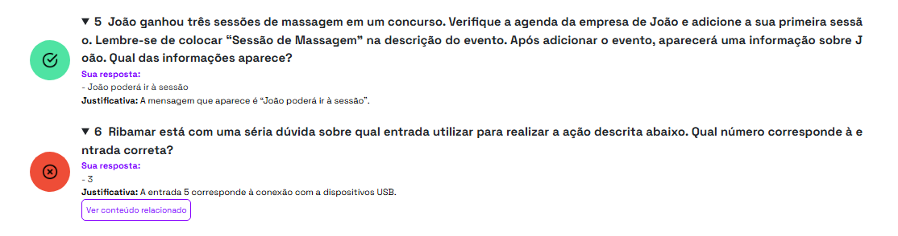

1
Liberação do Exame de Certificado do Nível 5
VÍDEO
Problema: Após finalizar as 16 competências do nível 5, o exame de certificação correspondente não foi liberado.
Impacto: Usuários não conseguem obter a certificação mesmo após completar todos os requisitos necessários.
2
Exibição de Conteúdo Relacionado
VÍDEO
Problema: Ao clicar em "Ver conteúdo relacionado", o card aparece no início da seção da página, mas a rolagem não é automática.
Impacto: Se o usuário estiver muito abaixo na tela, parece que nada aconteceu, causando confusão e má experiência de usuário.
3
Envio de Observação
VÍDEO
Problema: Ao clicar em "Enviar observação", o card aparece no início da sessão, mas a tela não é arrastada automaticamente.
Impacto: O usuário precisa rolar manualmente para ver o card, prejudicando a fluidez da navegação.
4
Confirmação de Envio de Observação
VÍDEO
Problema: Ao enviar uma observação, não aparece nenhuma mensagem ou confirmação visual informando que a observação foi enviada com sucesso.
Impacto: Gera dúvida no usuário se a ação foi registrada, podendo levar a envios duplicados ou frustração.
5
Conteúdo Relacionado
IMAGEM
Problema: O conteúdo relacionado é exibido apenas nas perguntas respondidas incorretamente.
Impacto: Limita o acesso a material complementar que poderia enriquecer o aprendizado mesmo em respostas corretas.
